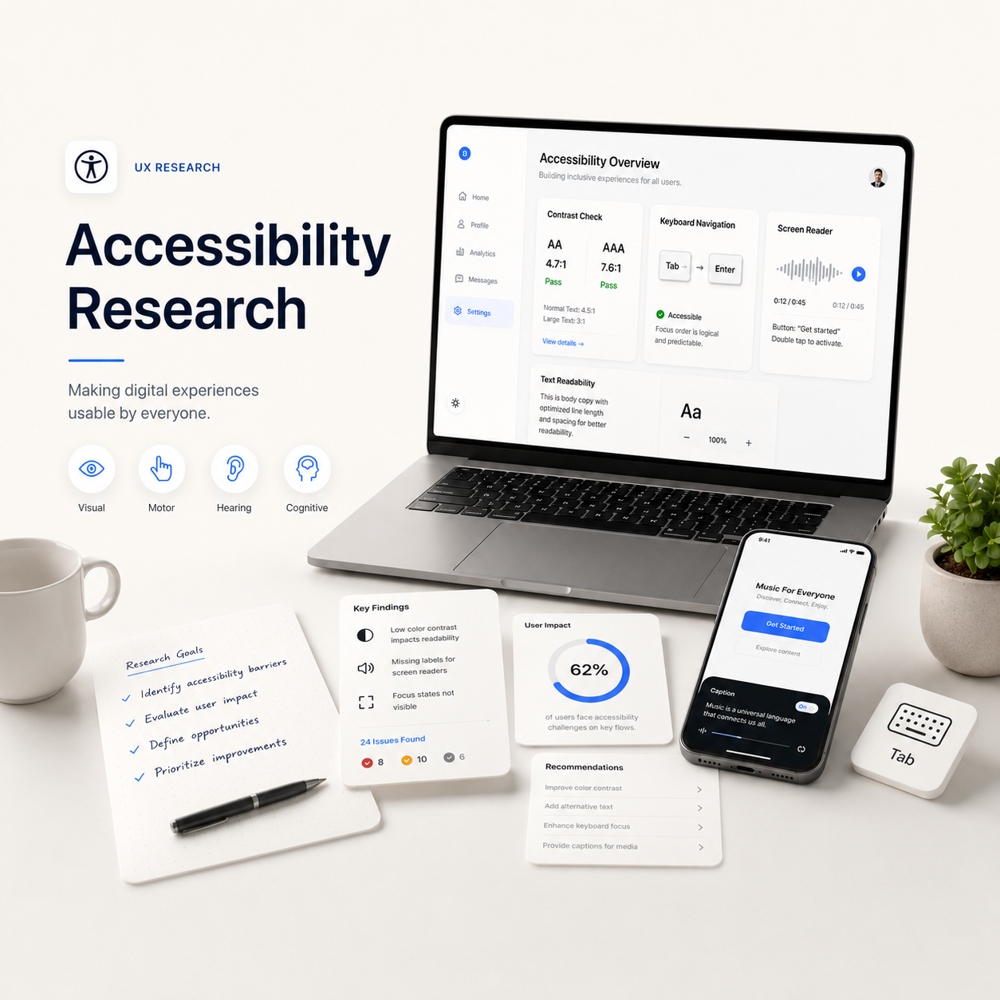

Understand the space
I reviewed research about everyday visual challenges, image quality issues, one-size-fits-all image descriptions, privacy and object recognition errors.
ACCESSIBILITY RESEARCH STUDIO
SightSense explores how assistive technology can go beyond simple recognition and support understanding, confidence and independence. This research focuses on how BLV users identify objects, understand surroundings, recover from errors and decide whether they can trust assistive tools.

accessibility is not an extra.
01 / Problem
Blind and low-vision users may use screen readers, smart glasses, voice assistants, object recognition apps, text readers and AI chat tools. The problem is not that these tools are useless. The problem is that they often work separately, so users have to switch between tools, repeat steps, recover from errors and judge whether the output can be trusted.
Selected Problem
A participant described switching from smart glasses to a phone when the glasses ran out of battery. That moment shows that the experience breaks not only because of recognition accuracy, but because the support system is not continuous.
02 / Research Approach
The project combines literature review, participant responses, interview notes and thematic analysis to understand what a future context-aware assistant should support.
I reviewed research about everyday visual challenges, image quality issues, one-size-fits-all image descriptions, privacy and object recognition errors.
I focused on how BLV users identify objects, read labels, understand surroundings, recover from errors and decide whether to trust an assistive tool.
I grouped recurring signals into research themes: fragmentation, context, reliability, privacy, transparency and recovery.
Accumulated Research Data
High friction
Very high
Important
Critical
03 / Participant Voice
Participant Signal 01
Screen readers, NVDA, Narrator, Meta glasses, ChatGPT, Alexa, Google Home and phone-based tools.
Breakdowns were not always about wrong answers. They also came from internet issues, battery problems, switching devices and unclear feedback.
Participants wanted the assistant to explain uncertainty, offer alternatives and make it clear what the system is doing.
04 / Findings
Active Finding
A future assistant should combine object identification, text reading, environmental context and follow-up questions so users do not have to jump between disconnected tools.
05 / Research Matrix
06 / Current Experience Map
Find an item, read a label, fix a device, understand a space.
User chooses glasses, phone, screen reader, AI tool, voice assistant or touch.
The answer may be useful, incomplete, confusing or delayed.
User switches tool, asks someone, retries, reframes or gives up.
07 / Design Implications
Users should be able to ask: “Where is it?”, “What does it say?”, “Is it safe?”, and “What should I do next?”
The assistant should explain what it knows, what it is unsure about and how the user can verify the result.
Users should control when the camera is active and what is stored, processed or shared.
Output should support voice, text, screen reader compatibility and Braille-friendly structure.
08 / Research Takeaway
The biggest takeaway is that BLV users do not only need recognition. They need context, transparency, privacy, reliability and recovery. A useful smart assistant should reduce friction, not add another layer of work.